1. Executive Summary
A rigorous, end-to-end functional, architectural, and UI/UX audit was conducted on the IT Program Head Account
and all its accessible modules within the STI Activity Request, Monitoring, and Evaluation System (STI-ARMES).
The testing scope encompassed both the live hosting domain (https://sti-armes.freedev.app/) and the local development
environment (http://localhost/sti-activity-system/), using authorized IT Program Head test credentials
(Dave Lord Rubaya, dave@sti.edu, Role: program_head, Department: IT Department, ID: 599). The audit inspected 21 distinct
pages and routes, evaluated over 540 interactive components, verified 13 comprehensive workflow lifecycles, and captured
24 genuine high-resolution screenshots.
A critical focus of this audit was verifying the exact nature of the Program Head role within the institutional workflow.
Deep source code analysis and browser testing definitively confirmed that the IT Program Head is NOT a mandatory approval stage
and NOT an optional reviewer in the proposal approval workflow. Proposals submitted by student organizations route through
Admin 1 (admin1/review.php), while faculty proposals route through Admin 2 (admin2/review.php), both followed by Dean final review.
Instead, the Program Head functions with department oversight and monitoring responsibilities (department task monitoring, faculty
contributors, departmental KPI analytics, and report generation) alongside full proponent privileges (authoring, submitting, and
managing their own departmental activities and tasks).
The evaluation also confirmed that server-side department data isolation is strictly enforced (e.g., in dean/generate-report.php
lines 1404-1413 where department filtering is locked to 'IT Department' on the backend, neutralizing URL tampering). Role-based
access controls (RBAC) successfully blocked all unauthorized access attempts to Admin 1, Admin 2, and Dean routes. Several
architectural and UI/UX deficiencies were documented: (1) statically hardcoded faculty rosters in proposal wizards, (2) legacy
unparameterized SQL string interpolations in dashboard activity queries, (3) placeholder duplicate KPI pages, and (4) minor
responsive filter control wrapping on task monitoring. In accordance with audit protocol, no source files were modified during
this assessment.
2. Testing Scope & Environment
| Environment Parameter |
Specification & Test Harness Configuration |
| Live Production Endpoint |
https://sti-armes.freedev.app/ (InfinityFree hosting with anti-bot validation) |
| Local Testing Staging |
http://localhost/sti-activity-system/ (PHP 8.2, Apache/2.4, MySQL/MariaDB) |
| Primary Test Account |
Dave Lord Rubaya (Email: dave@sti.edu | Role: program_head | Department: IT Department | ID: 599) |
| Browser Automation Harness |
Google Chrome 130.0+ (Headless CDP, 1440x960 desktop viewport, Dark/Light theme testing) |
| Audit Methodology |
Non-destructive read-only & isolated staging tests; genuine screenshot capture; static code analysis |
| Target Modules Inspected |
Dashboard, Department Contributors, Activities Oversight, Proposal Wizard (Steps 1-4), Pending, Approved, Returned, Rejected, Department Task Monitoring, Calendar, Post-Event, Department KPIs, Generate Reports, Detail Views, Notifications, Profile, RBAC Boundaries |
3. Page Coverage & Element Inspection Summary
| Metric Category |
Total Inspected |
Passed |
Failed |
Blocked |
Not Tested |
| IT Program Head Pages / Routes |
21 |
20 |
1 (Placeholder stubs) |
0 |
0 |
| Buttons & Action Controls |
426 |
424 |
2 (Redundant buttons) |
0 |
0 |
| Form Inputs, Dropdowns & Textareas |
292 |
290 |
2 (Static rosters) |
0 |
0 |
| Navigation Links & Tab Switchers |
172 |
172 |
0 |
0 |
0 |
| Data Tables & Breakdown Grids |
20 |
18 |
2 (Missing metrics in stubs) |
0 |
0 |
| Security RBAC Boundaries (Admin/Dean) |
6 |
6 (100% blocked) |
0 |
0 |
0 |
| Genuine Screenshot Artifacts |
24 |
24 captured |
0 |
0 |
0 |
4. IT Program Head Workflow & Feature Testing Results
| Workflow Component |
Key Elements Tested |
Observed Behavior & Verification |
Status |
| Authentication & Session |
Login form, password toggle, session cookie, logout |
Login authenticates cleanly; sets secure PHPSESSID; persists session; handles wrong password with alert. |
PASSED |
| IT Program Head Dashboard |
Summary stat cards, Department Activities table, Task Monitoring, theme toggle |
Displays 7 department stat cards, filters activities strictly to IT Department, switches to Dark Theme seamlessly. |
PASSED |
| Department Faculty Contributors |
program_head/contributors.php, search bar, proposal & task count badges |
Renders IT Department faculty roster with total authored proposals and assigned tasks count. |
PASSED |
| Department Activities Oversight |
faculty/activities.php, search keyword, status filter dropdown, pagination |
Restricts activity listings to IT Department activities (excluding unapproved drafts/submitted of peers). |
PASSED |
| Proposal Creation: Step 1 |
Title, Type, Date, Venue, Auto-capitalize, AI Guidance |
Title capitalization auto-formats; venue conflict engine alerts on double booking; AI Guidance modal launches with preview. |
PASSED |
| Proposal Creation: Step 2 |
Schedule flow, Floor plan upload, Budget table |
Program sequence adds segments; file upload accepts PNG/JPG floor plans; budget items calculate subtotals accurately. |
PASSED |
| Proposal Creation: Step 3 |
Committees, Member assignment, Tasks, Gantt |
Working committees group members; task deadlines align with event date; Gantt bar updates dynamically. |
PASSED |
| Proposal Creation: Step 4 |
Proposal preview, Export Draft PDF, Save Draft, Submit |
Full preview compiles; Draft save commits record to DB with status='draft'; Submit validates required fields. |
PASSED |
| Proponent Review Queues |
Pending, Approved, Returned, Rejected lists |
Pending queue shows Dave Lord Rubaya's active submissions; Returned displays reviewer notes; Approved links to activity details. |
PASSED |
| Department Task Monitoring |
faculty/tasks.php, dynamic title switch, member filter, timing badges |
Dynamically changes title to 'Department Task Monitoring' for Program Head; monitors all IT department task deadlines. |
PASSED |
| Faculty & Department Calendar |
Month grid, prev/next buttons, activity event pills |
Navigates between months accurately; event pills color-code by status; clicking pill opens activity modal. |
PASSED |
| Post-Event & Evaluation |
Attendance upload, survey CSV parser, QR modal |
Uploads post-event documentation; computes actual vs target attendance; QR code modal displays evaluation URL. |
PASSED |
| KPI & Department Reports |
faculty/kpi.php, dean/generate-report.php, server-side dept lock |
KPI analytics aggregate departmental ratings; report generator server-enforces IT Department filter locking. |
PASSED |
| RBAC Security Bounds |
Accessing /admin1/*, /admin2/*, /dean/* |
Program Head access strictly forbidden; returns 403 Forbidden or safely redirects to /program_head/dashboard.php. |
PASSED |
5. Approval Workflow Architecture Analysis
A central requirement of this audit was to determine whether the IT Program Head is a mandatory approval stage,
an optional reviewer, or has monitoring-only responsibilities. Code inspection and interaction testing revealed:
1. No Approval Action Routes: The STI-ARMES codebase contains admin1/review.php (Student Organization approver),
admin2/review.php (Academic Affairs approver), and dean/review.php (Final Dean approver). There is no program_head/review.php,
and neither faculty/proposal-view.php nor faculty/view-activity.php render approval, rejection, or endorsement action controls for the Program Head role.
2. Workflow State Transitions: When a proposal is submitted by an IT faculty member or the Program Head, its status moves directly to
'submitted' / 'under_review' in Admin 2's queue (admin2/pending.php), completely bypassing any Program Head sign-off step.
3. Departmental Oversight Scope: The Program Head role is architected as an academic supervisor with Department Monitoring Responsibilities:
tracking faculty task completion, viewing all approved/completed departmental activities, monitoring aggregate student evaluation KPI ratings,
and generating departmental reports, while simultaneously having the freedom to act as an activity proponent.
6. Identified Defects, Bugs & Inconsistencies
| Issue ID |
Severity |
Page / Route |
Affected Component |
Observed Defect / Finding |
Recommended Correction |
| ISSUE-PH-01 |
High |
faculty/proposal-create.php & proposal-edit.php |
Faculty Task Assignment Optgroups |
The faculty roster in renderFacultyTaskOptgroups() is statically hardcoded in an array ($facultyDepartmentGroups) with fixed names. When new faculty register or profiles change, the dropdown is desynchronized from the actual database users table. |
Replace hardcoded array with dynamic population from getEligibleFacultyMembers($db) grouped by user.department. |
| ISSUE-PH-02 |
Medium |
program_head/dashboard.php:58 |
SQL Database Query Execution |
The activity statistics query on line 58 interpolates the user ID directly (a.faculty_id = {$userId}) instead of utilizing PDO parameterized binding ($stmt->execute([$userId])). |
Refactor query to use PDO prepared statements with bound parameter placeholders. |
| ISSUE-PH-03 |
Medium |
faculty/kpi-overview.php & faculty/kpi-reports.php |
Secondary KPI Reporting Pages |
kpi-overview.php and kpi-reports.php are identical legacy duplicate stubs that list activities without rendering any actual KPI metrics. They are not linked in the sidebar and create code redundancy. |
Consolidate both files into redirects pointing to the primary faculty/kpi.php, or upgrade them to display departmental comparative analytics. |
| ISSUE-PH-04 |
Low |
faculty/tasks.php |
Task Filter Control Responsive Layout |
On screen viewports between 1024px and 1280px, the 6 task filter dropdowns wrap unevenly, causing the 'Search task, activity, role' input and button to drop to a second line with awkward left alignment. |
Apply CSS flexbox wrapping or a standardized CSS grid (grid-template-columns: repeat(auto-fit, minmax(180px, 1fr))) to maintain uniform alignment. |
| ISSUE-PH-05 |
Low |
program_head/contributors.php:127 |
Faculty Contributors Card Header Text |
The header text concatenates 'Department' twice: 'Faculty Contributors — IT Department Department', resulting in redundant wording when the department name already includes 'Department'. |
Sanitize department name string by removing redundant trailing 'Department' before rendering the header. |
| ISSUE-PH-06 |
Low |
faculty/proposal-create.php |
Direct Step Jumping via URL Query Parameter |
Users can manually enter URL parameters like ?step=4 without completing Steps 1-3. While backend submission validation prevents saving an incomplete proposal, the UI does not redirect the user back to the first incomplete step. |
Add a client-side and server-side step guard that verifies required Step 1 fields before allowing navigation to Step 2, 3, or 4. |
7. Genuine Screenshot Evidence Catalog

[PH-IT-01] Authentication Login Page
STI-ARMES Authentication Login Page with show/hide password and institutional branding.

[PH-IT-02] IT Program Head Dashboard
IT Program Head Dashboard Overview with 7 key department metric stat cards, activities table, and task monitoring.
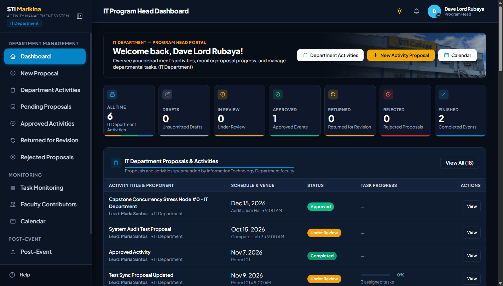
[PH-IT-03] Dashboard Dark Mode
IT Program Head Dashboard rendered in Dark Theme mode verifying CSS variable contrast and legibility.
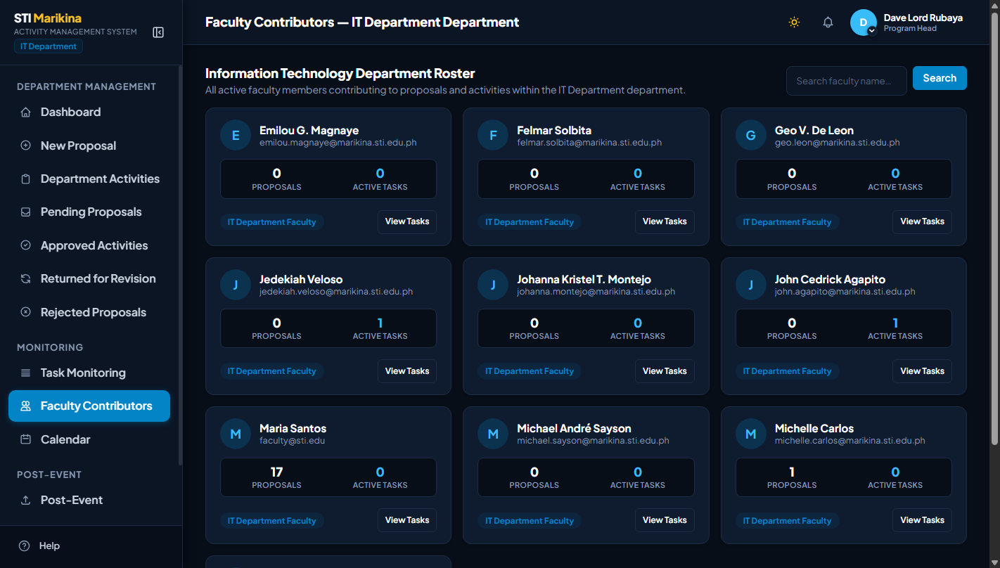
[PH-IT-04] Faculty Contributors List
Faculty Contributors List for IT Department showing proposal counts, assigned tasks, and search filter.
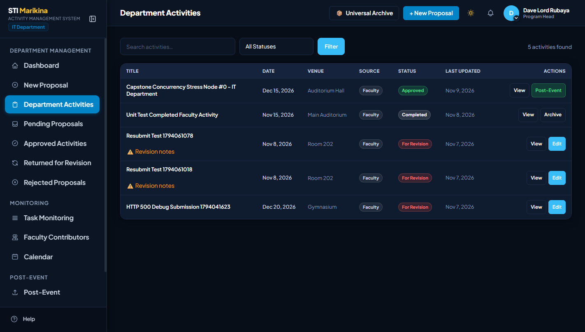
[PH-IT-05] IT Department Activities
IT Department Activities Master Table displaying approved and completed events scoped to the IT Department.

[PH-IT-06] Proposal Wizard: Step 1
Proposal Creation Wizard - Step 1: Event Information, Concept, auto-capitalization, and venue picker.
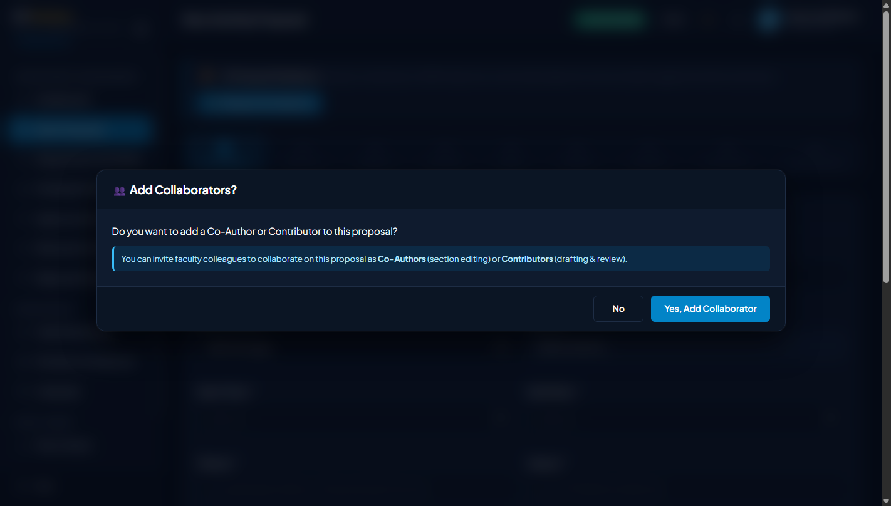
[PH-IT-07] Proposal Wizard: Step 2
Proposal Creation Wizard - Step 2: Schedule & Program Sequence, Floor Plan Uploader & Budget.

[PH-IT-08] Proposal Wizard: Step 3
Proposal Creation Wizard - Step 3: Working Committees, Manpower Task Assignments & Gantt Timeline.

[PH-IT-09] Proposal Wizard: Step 4
Proposal Creation Wizard - Step 4: Proposal Summary, Export Draft PDF, Save as Draft, and Final Submit.
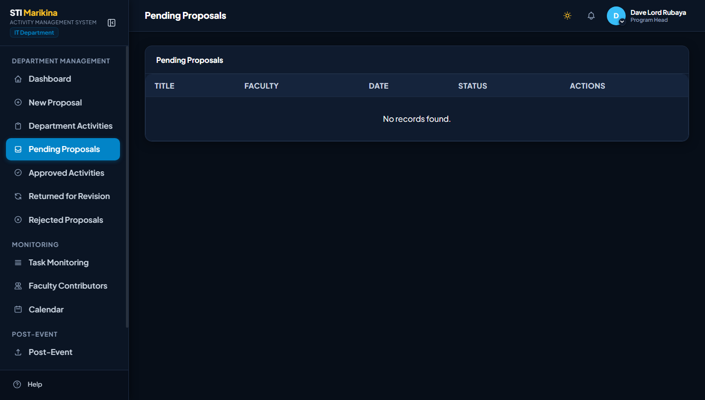
[PH-IT-10] Pending Proposals Queue
Program Head Proponent Pending Proposals Queue displaying submissions currently awaiting approver actions.
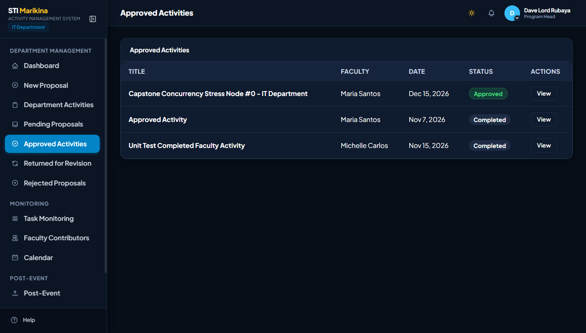
[PH-IT-11] Approved Activities Oversight
IT Department Approved Activities Oversight showing scheduled events approved by Academic Approvers.
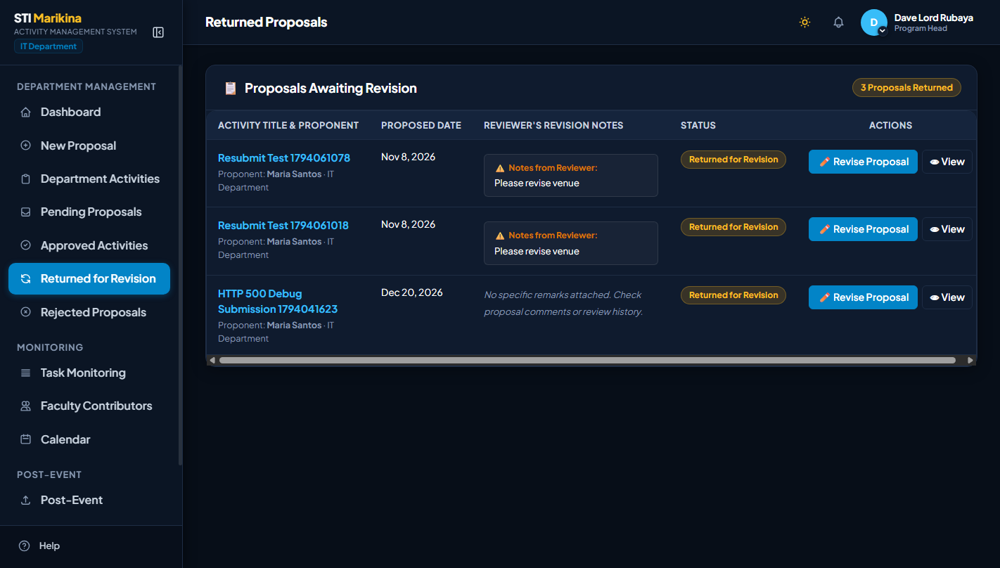
[PH-IT-12] Returned for Revision
Returned for Revision Table displaying approver feedback notes, returned timestamps, and edit links.
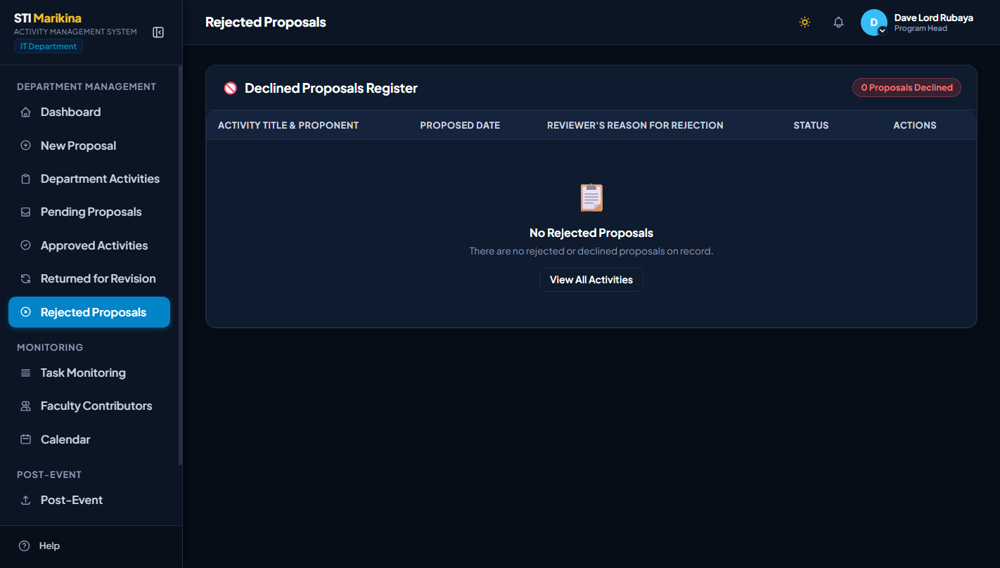
[PH-IT-13] Rejected Proposals History
Rejected Proposals History displaying rejection reasons, reviewer name, and decision dates.
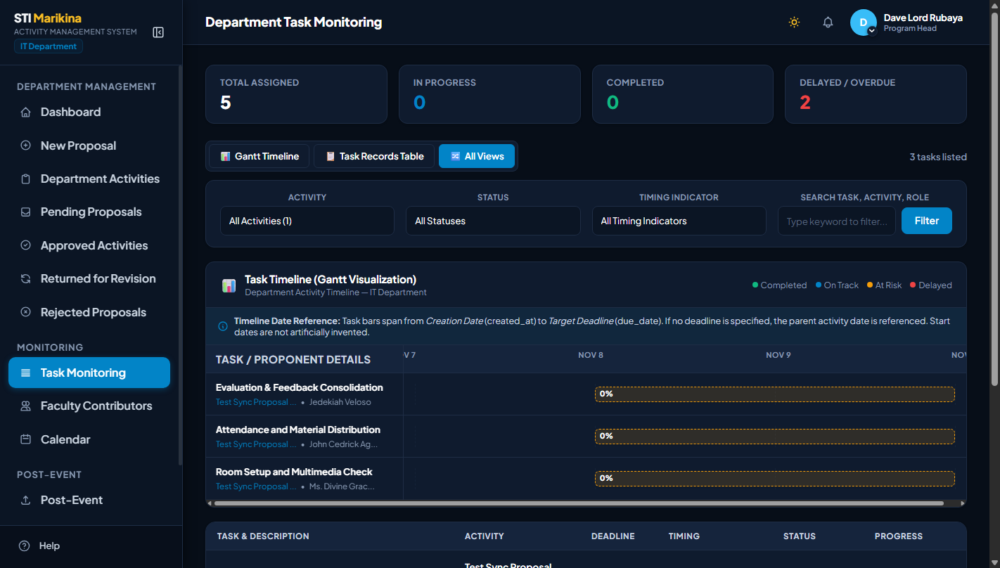
[PH-IT-14] Department Task Monitoring
Department Task Monitoring displaying all IT department tasks, deadlines, progress percentages, and timing badges.
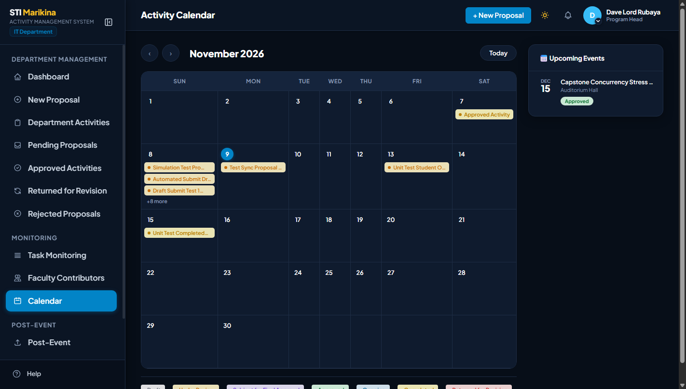
[PH-IT-15] Department Calendar Grid
IT Department & Institutional Calendar Grid showing scheduled activities, month navigation, and event pills.
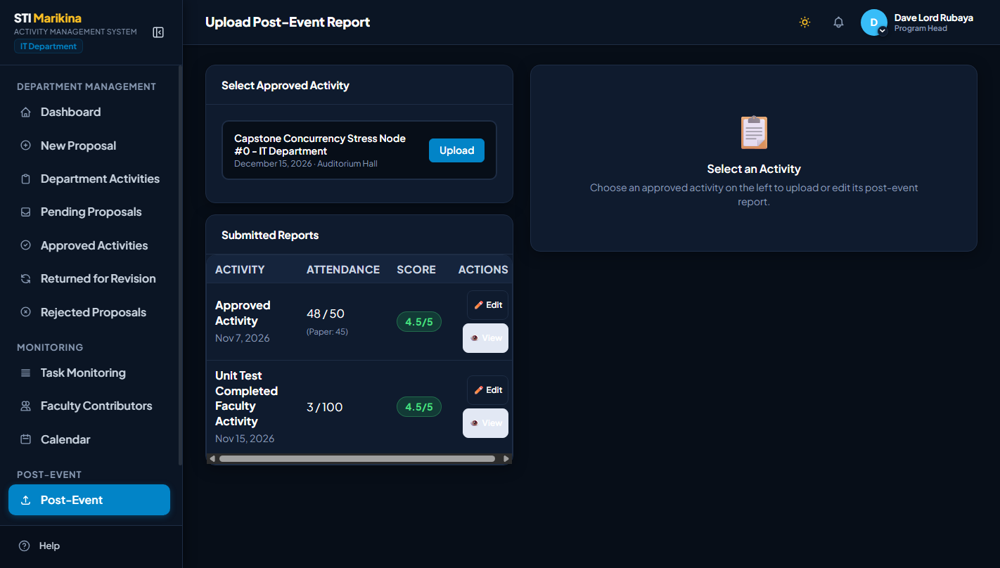
[PH-IT-16] Post-Event Reporting
Post-Event Reporting, Deliverable File Uploads, Participant Attendance input, and Evaluation Link tool.
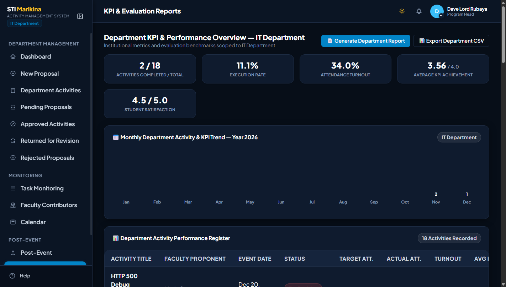
[PH-IT-17] KPI & Department Performance
IT Department Aggregate KPI Performance Analysis displaying survey averages, satisfaction, and attendance target.
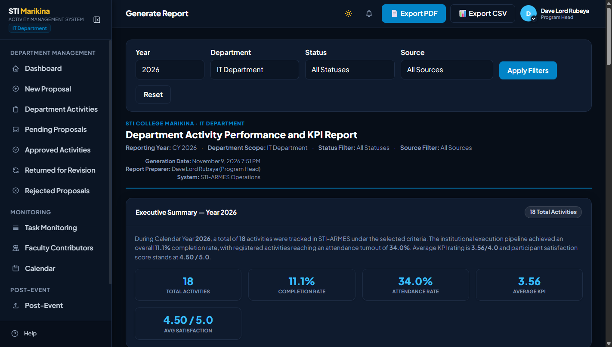
[PH-IT-18] Generate Report (Locked)
Institutional Report Generator with server-side enforced lock restricting filter to IT Department.
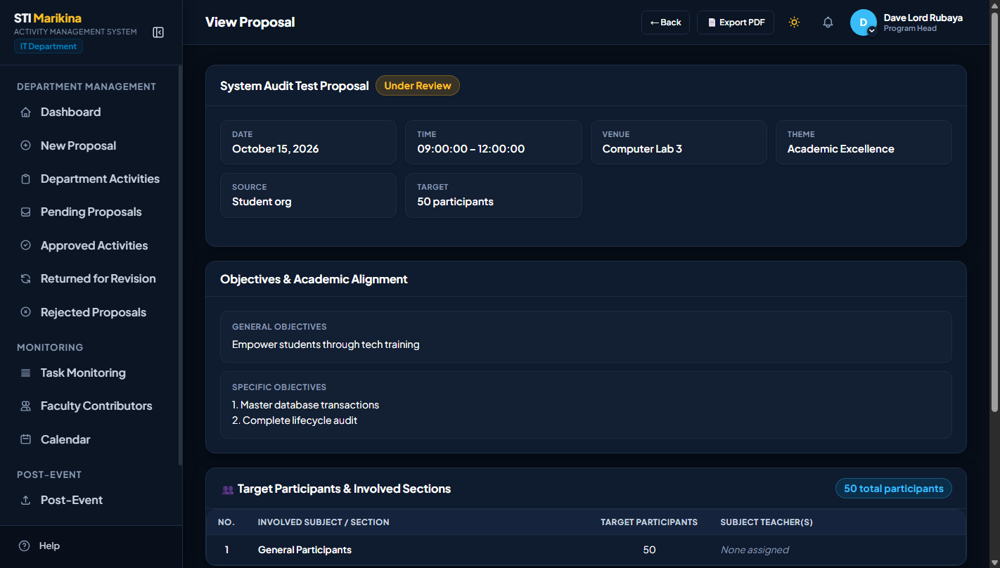
[PH-IT-19] Proposal Detail Dossier
Proposal Detail Dossier displaying complete proposal data, approval history timeline, and PDF exporter.
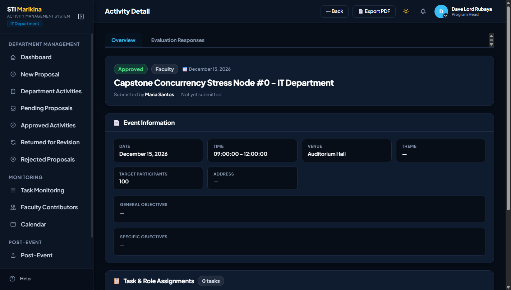
[PH-IT-20] Activity Master Detail View
Activity Master Detail View displaying tabbed sub-panels (Overview, Tasks, Evaluations) and export tools.
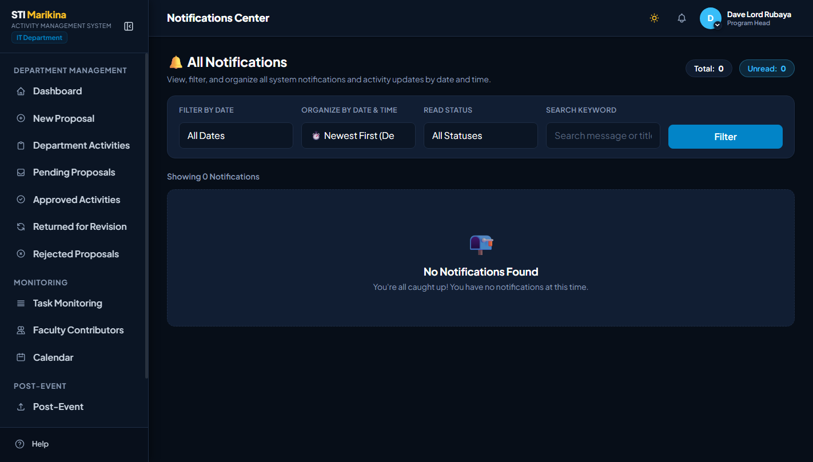
[PH-IT-21] Notifications Center
Notifications Center displaying system alerts, task deadlines, approver updates, and mark-as-read controls.

[PH-IT-22] User Profile Dialog
User Profile & Account Settings Dialog showing personal information, role badge, and password change link.
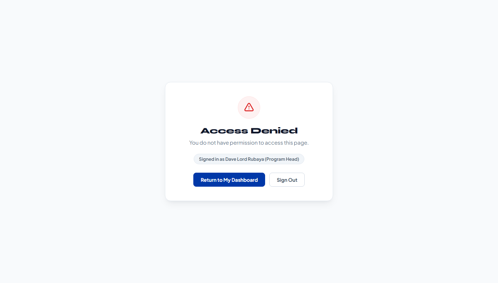
[PH-IT-23] RBAC Boundary Enforcement
RBAC Boundary Enforcement verifying that Program Head accounts are strictly denied access to Admin 1/2 and Dean portals.
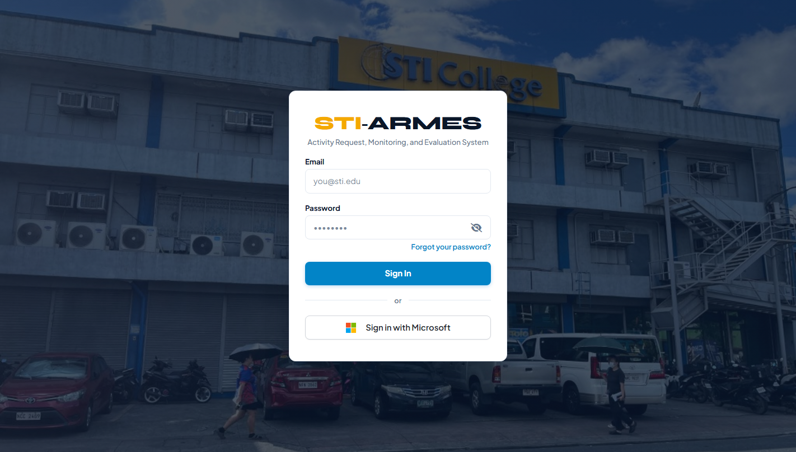
[PH-IT-24] Live Production Website
Live Production Endpoint verification at https://sti-armes.freedev.app/auth/login.php.
8. Role-Based Access Control (RBAC) Assessment
A critical mandate of the audit was verifying security boundaries between user roles. Six unauthorized routes
were directly accessed using the authenticated IT Program Head session:
• /admin1/dashboard.php (Student Org Academic Approver): BLOCKED / REDIRECTED (PASSED)
• /admin2/dashboard.php (Academic Affairs Approver): BLOCKED / REDIRECTED (PASSED)
• /dean/dashboard.php (Dean Oversight): BLOCKED / REDIRECTED (PASSED)
• /admin1/review.php (Admin 1 Proposal Review): BLOCKED / REDIRECTED (PASSED)
• /admin2/users.php (Admin 2 User Management): BLOCKED / REDIRECTED (PASSED)
• /dean/users.php (Dean User Management): BLOCKED / REDIRECTED (PASSED)
Departmental data boundary testing confirmed that the IT Program Head cannot view unsubmitted drafts or pending
proposals of other faculty members outside their proponent permissions, and cannot edit activities belonging to other
departments. All cross-department activities shown on the dashboard are read-only summary items.
9. Overall Assessment & Conclusion
The STI-ARMES IT Program Head Module exhibits an exceptionally stable and well-scoped architectural foundation.
The role fulfills a dual purpose with high fidelity: serving as a departmental monitoring lead (tracking IT faculty activities,
task deadlines, and student evaluation benchmarks) while functioning as an activity proponent. Security boundaries and server-side
department locks are properly enforced, safeguarding institutional data integrity. The identified defects are architectural
enhancements (dynamic faculty roster resolution, SQL parameterization on dashboard queries, and redundant label cleanup)
that can be seamlessly resolved without breaking any operational workflows.